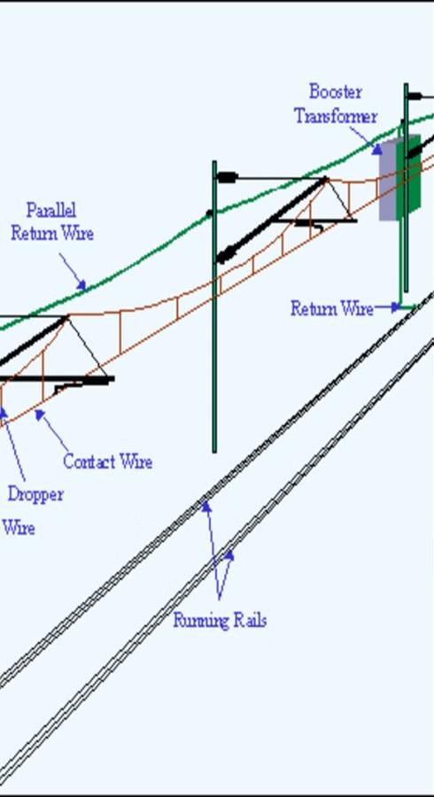
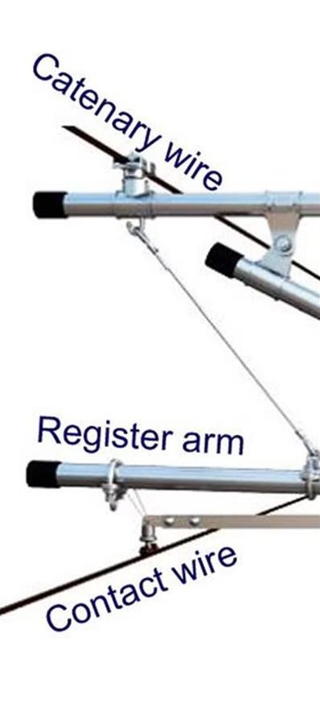
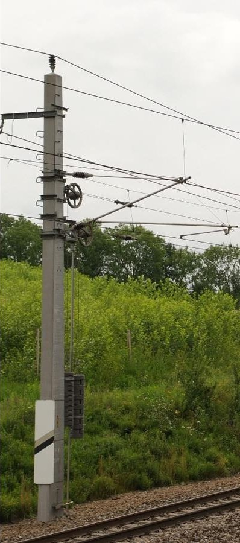
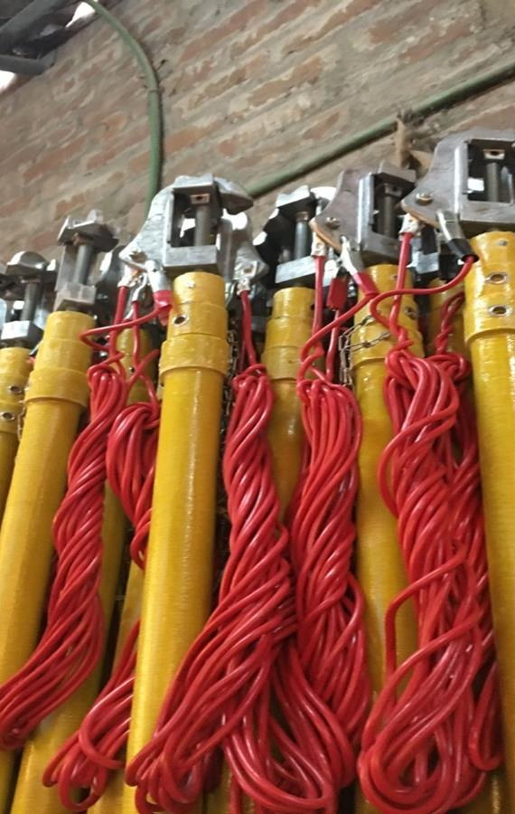

NMRC · O&M · OHE Training
Placing Earthing (Discharge) Rod on OHE
Procedure, and Dos & Don'ts for working in 25 kV AC traction area
For Station Controllers · Date: …………
Procedure, and Dos & Don'ts for working in 25 kV AC traction area
For Station Controllers · Date: …………
| Part | Topic |
|---|---|
| A | Basics: 25 kV, OHE and the discharge rod |
| B | Inspecting the discharge rod |
| C | Placing the discharge rod |
| D | Removing the discharge rod |
| E | Dos & Don'ts with 25 kV AC |
| F | Emergencies, key numbers, assurance |
Check a discharge rod and reject a faulty one.
Follow the correct order, every time.
Follow the Dos & Don'ts of the 25 kV area.
25 kV, OHE and the discharge rod
AC supply in the overhead equipment (OHE).
(≈ 7 ft) Danger zone from any traction wire or live equipment.
| Term | Meaning |
|---|---|
| OHE | Overhead equipment: the 25 kV wires and fittings over the track |
| TPC | Traction Power Controller |
| SCR | Station Controller |
| PTW | Permit to Work |
| Power block | Blocking of a section of line to electric traffic only |
| Shadow power block | OHE section of the work area, made dead for work |



| Part | Purpose |
|---|---|
| Insulated pole | Held by the operator |
| Top clamp | Hooks on the contact wire |
| Flexible copper cable | Carries current to earth. Thimble fixed at both ends |
| Earth / mast clamp | Clamps to the rail |

Check before every use
Top clamp closes and opens properly. All nuts and bolts are tight.
Flexible copper cable is not cut. Thimble is properly secured with the top clamp and the earth / mast clamp.
More than 20% of strands should not be cut from the copper cable at the thimble sides.
Up to 20% strands cut
More than 20% strands cut
| Check | Pass if |
|---|---|
| Clamp and bolts | Top clamp works. All nuts and bolts tight |
| Cable | Not cut. Thimble secure at both ends |
| Strands | 20% or less cut at thimble |
Shadow power block section
| Step | Action |
|---|---|
| 1 | Inspect the rod |
| 2 | Confirm OHE is dead, with OHE supervisor |
| 3 | Clamp both earth clamps to the rail |
| 4 | Test with metal tube on top clamp |
| 5 | Hook rod on the contact wire |
| 6 | Repeat on UP & DN lines, both ends |
| 7 | PTW can be granted |
OHE power supply of the shadow power block section has been made dead.
Take confirmation from OHE supervisor by exchanging private numbers.
When the rods are placed on both lines at both ends, the permit to work for the work can be granted.
Reverse order
Before completion of work, ensure that all men and materials have been removed from the vicinity of the OHE.
Confirm removal of men, materials and discharge rod from site by exchanging private numbers.
Working in 25 kV AC traction area
Dos
In case of fire on electric traction equipment or wires: (i) inform Traction Power Controller (TPC); (ii) extinguish by special extinguishers (carbon tetrachloride or carbon dioxide type), if available; (iii) ensure no water jet is directed at the fire under any circumstances.
Anything unusual on traction wires or electric rolling stock: inform Traction Power Controller or nearest Station Master.
In any emergency, speak to Traction Power Controller through the nearest means of communication.
Large metallic structures such as fencing and structural steel work of platforms running parallel to the track should be earthed suitably.
Any tree or branch likely to fall on a live conductor, or nearer than 4 m from the nearest live conductor, shall be cut or trimmed by concerned staff in the presence of authorised staff of OHE.
Before taking up work on a line running parallel to 25 kV AC lines, the line shall be earthed on both sides of the working party.
Ensure that the distance between the two earths used for protection of the working party does not exceed 1 km.
Keep clear of the track and avoid contact with the rails when an electric train is within 250 m.
Take special care to carry long pipes, poles or ladders so that they do not come in contact with or within 2 m of live OHE.
DO NOT approach within 2 metres (approximately 7 feet) of any traction wires or live equipment.
DO NOT work on or near traction wires or any live equipment unless they are made dead, earthed and shut down notices / permit to work obtained.
DO NOT enter any switching station or remote control centre unless specially permitted.
DO NOT permit unauthorised persons to operate any equipment, even if it be for making it dead.
DO NOT disturb any earthing or bonding or traction wires or connections to BEC (buried earth cable) or OPC (overhead protection cable).
DO NOT touch a person in contact with live traction wires. Remove body only after power supply is switched off and earthed.
DO NOT forget to give artificial respiration to the victim as per the prescribed procedure laid down at shock treatment charts.
DO NOT touch any traction wire hanging from the mast or fallen on the ground, and do not allow anyone else to touch it.
DO NOT operate crane on or near traction OHE unless an authorised representative of the OHE is present.
Dos and Don'ts
Avoid slipping of wheels of rolling stock.
Keep a safe distance of 2 metres (7 feet) from traction wires while working on the rolling stock.
Whenever washing or cleaning rolling stock using water jets, take appropriate power block.
DO NOT lift or raise your tools towards traction wires (keep the tools in their respective position immediately after use).
DO NOT take electric rolling stock with raised pantograph to any unwired line, power block working limit or near the section insulators at the end of section under power block.
DO NOT climb into the rolling stock tender for any purpose while under traction wires, unless power is cut off and permit to work obtained.
DO NOT allow long articles or any other thing to protrude above the rolling stock while on electrified tracks.
DO NOT direct any jet or spray towards the traction wires (jets of water). If necessary, may be used horizontally outside the safety zone of 2 metres (7 feet).
Dos and Don'ts
Ensure all staff is conversant with safety precautions, station working rules and OHE sectioning diagrams.
Report defects in traction wires or any electric rolling stock promptly to the Traction Power Controller.
Observe the procedure given in station working instructions while operating isolator switches.
Ensure safe custody of isolator switch keys.
Ensure that traction power staff protect sections from all directions by banner flags during power blocks.
Instruct the authorised signal maintainer not to carry any long rod or article likely to be brought within the danger zone of 2 metres (approx. 7 feet) of the traction wires while going up the signal post.
As far as possible, closed wagons should be used for material trains. Loading and unloading is done under supervision of an inspector so that no tools or any part of the worker's body comes within the danger zone.
Maintain records of (a) incoming and outgoing messages from TPC, separately; (b) key register for interrupters and isolators, separately.
Unusual occurrences such as heavy rain, lightning and thunderstorm: Station Manager on duty should advise TPC of all such weather conditions.
The 'dead elementary section' of OHE shall be protected as per the provisions of the SWR.
Educate all staff under you on the above lines. See that the earthing connections of BEC, OPC, handrail and impedance bonds are not damaged when loading and unloading is done.
DO NOT permit an electric rolling stock or multiple unit with raised pantograph to approach any section under power block beyond 'Power Block Working Limit' boards, or near the section insulators.
DO NOT permit any crane to work adjacent to live traction wire.
DO NOT permit your staff to approach live traction wires within the danger zone of 2 metres (approximately 7 feet).
DO NOT permit electric rolling stock with raised pantograph to enter any unwired section.
DO NOT take off signals for direct reception for any electric rolling stock or train, if there is a power block within the adequate distances of the signals.
Dos and Don'ts
Maintain the correct level of height gauges at level crossing.
Provide rail jumper connections wherever a fish plate is to be removed or rails are to be removed (especially on tracks with wooden sleepers).
Ensure that insulated paint on your tools is intact.
In case of rail fractures, connect the two ends of the fractured rail temporarily by a temporary metallic jumper first, then take further action.
In case of discontinuity of rails, do not touch the two parts of rail with bare hands. Use gloves of approved quality.
Ensure the continuity of the plinth.
While unloading rails alongside the tracks, ensure that rails do not touch each other to form a continuous metallic mass of length greater than 300 m.
Maintain continuity of rails during maintenance or renewal of the track.
Staff working on installations directly in contact with rails should use tools of the type approved by their departments.
DO NOT continue working till the last minute in the face of an approaching electric train. Clear the line early.
DO NOT use steel measuring tapes or long metallic wires.
DO NOT dump ballast, earth or ashes against the foundations of the masts. Keep the top of the muffing clear.
DO NOT raise the track above the high rail level mark, especially under over-line structures.
DO NOT damage the plinth continuity, connection to BEC, OPC, handrail continuity.
To be remembered
If shunting is to be done for detaching hot-axled coaches on non-electrified track, take special precaution not to admit the electric rolling stock into the unwired section. A competent man shall personally supervise the shunting.
It is dangerous to go within 2 metres (7 feet) of the live equipment. This is the 'DANGER ZONE'.
Power block means blocking of section of the line to electric traffic only.
No material should be stacked either on the mast or on the mast foundation.
When a rubber-tyre motor vehicle is transported in an open wagon, bond the metal body to the wagon body by two independent solid connections (copper wire, galvanised iron flat or steel ropes). Metallic lashing ropes are preferable to manila or coir ropes.
Staff must close and secure wagon doors after loading or unloading. One staff should be posted in the yard to close wagon doors, and see that no wagon is allowed with its doors open.
Cases of electric shock from contact with 25 kV AC traction equipment shall be reported immediately to TPC.
Escorts for vehicles in an open wagon shall be warned to be careful of OHE wire and not stand unwillingly on the vehicle.
Any abnormality on OHE (broken contact wire, catenary wire, brackets, insulators, hanging dropper etc.) must be reported immediately to TPC over the emergency phone or through the nearest SM.
Every time staff work on signalling and telecom circuits along AC electrified lines, take precautions to protect themselves and equipment.
All ODC consignments should be moved in electrified section after taking precautions as per extant instructions.
Hoarding boards near electrified tracks should be at a safe distance so that, if their supporting structures are damaged, they do not fall on the OHE or infringe the track.
Do not bridge insulated joints with bare hand or any metallic article in track-circuited area.
Do not use the rails as a footpath, a seat or for such other purposes.
Do not use steel tape, metallic tape or tape with woven metal reinforcement in electrified area.
Do not expose the foundations while excavating.
Do not work on any portion of a signal post or its fittings within 2 m from live OHE, or a metal part electrically connected to it, unless protected with a metallic screen.
Do not work on a signal post within 2 m of live OHE and not protected with metallic screen unless OHE has been switched off and permit to work has been granted.
Emergencies, numbers, assurance
Inform Traction Power Controller.
Carbon tetrachloride or carbon dioxide type, if available.
No water jet directed at the fire under any circumstances.
Do not touch a person in contact with live traction wires.
Remove the body only after power supply is switched off and earthed.
Give artificial respiration as per shock treatment chart. Report to TPC immediately.
| Number | Meaning |
|---|---|
| 25 kV | AC traction voltage |
| 2 m (≈ 7 ft) | Danger zone from live equipment |
| 4 m | Trees / branches nearer than this to live conductor are cut or trimmed |
| 250 m | Electric train this close: keep clear of rails |
| 1 km | Maximum distance between two earths |
| 20% | Maximum cut strands at thimble |
| 300 m | Maximum continuous metallic mass of unloaded rails |
| Trainer | Trainee |
|---|---|
| Date of training: | Name & sign: |
| Place of training: | Designation: |
| Sign of trainer: | Emp. No.: |
| Designation / Emp. No.: | Mobile No.: |
Dead. Earthed. Permit. Then work.